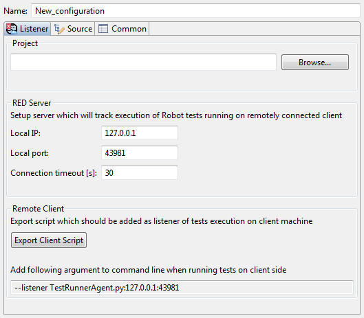

When Robot Remote launch configuration is launched, it setups a simple server inside RED instance and listens execution events from remote TestRunnerAgent which runs Robot tests on remote host.
Open Run -> Run Configurations... dialog and under Robot Remote create new configuration. The configuration itself is rather simple and consists mainly of network-related settings:
Once remote configuration is launched the server will report it in Console view:

after that the tests can be launched. Refer to
Starting test execution
chapter in RobotFramework user guide for detailed description about launching Robot tests.
For RED it is only important that the agent script is injected into
execution using --listener argument. Without it RED will not be able to obtain any
data from running tests, thus Execution view, Message Log view and debugging
will not work - simply the server will shut down after specified timeout has passed as no
client have connected.
The agent script can be exported from Remote Launch Configuration dialog using Export Client Script button visible on image above. From the same dialog you can copy command line argument which has to be used when launching tests. It may be required to provide whole absolute path to agent script depending on the location it was exported and location from which the tests are executed. Refer to detailed agent usage description for all options used by agent.
In simplest case following command line call would start Robot with injected agent, which will try to
connect to RED server running on localhost at port 12345 and will send data needed by RED:
python -m robot.run --listener /LOCATION_TO_AGENT_FILE/TestRunnerAgent.py:127.0.0.1:12345 TEST_LOCATION
Remote debug allows to perform debug activities with RED using remote host to execute tests and get debug information back to RED. It is especially useful when Robot tests are executed on dedicated test line with hardware/software under test or in cloud environment where test editing and test execution is separated. Robot Remote configuration needs to be launched in debug mode. Apart from that debugging is no different from local debug - remember to set at least one breakpoint prior the debug run.
When having problem with running/debugging Remote configurations, please double check following: